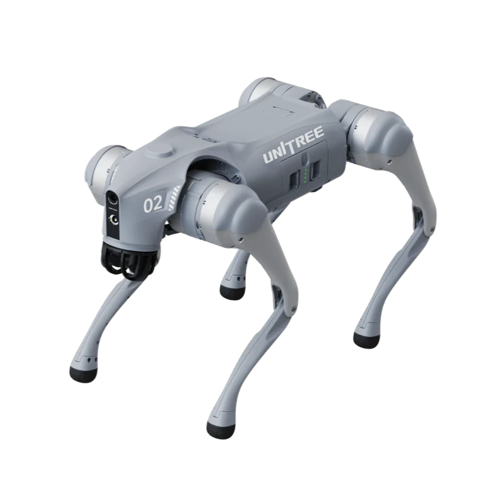
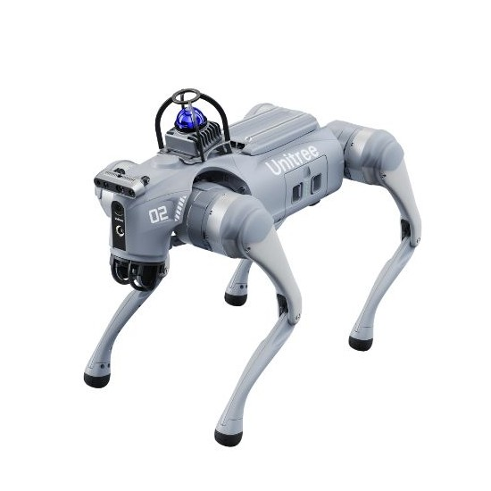
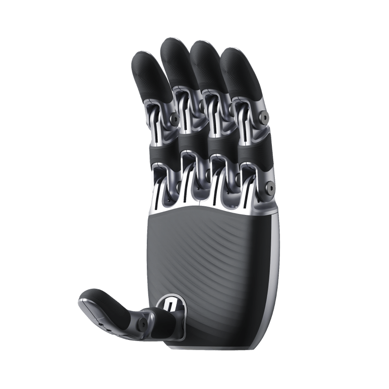

Consumer / base

Unitree Go2 Pro
Quadrupede · 10 kg carico
Carico utile10 kg
Velocità max3,5 m/s
Pendenza max40°
Computing8-core CPU
- LiDAR4D L1
- Protezione—
- Autonomia1–2 h
- Garanzia12 mesi
Robot quadrupedi · cane robot
Un robot quadrupede (o cane robot) è un robot mobile a quattro zampe che cammina dove ruote e cingoli si fermano: scale, grigliati, terreni sconnessi. In Italia i quadrupedi Unitree costano da 2.990 € (Go2 Air) a oltre 100.000 € (B2-W con LiDAR), IVA esclusa, con spedizione e dazio inclusi. Abra Robotics è parte della filiera Unitree Italia: qui trovi i prezzi pubblici di Go2, AS2, A2 e B2, le specifiche ufficiali e il modello giusto per ricerca, ispezione, sicurezza e outdoor.
Famiglie Unitree: prezzi e versioni
Confronto
Prezzi End-User a listino, IVA esclusa, spedizione e dazio in Italia inclusi; ogni ordine si conferma con un preventivo aggiornato. Specifiche dai dati ufficiali Unitree (Go2, AS2, A2, B2), misurate in laboratorio. Su mobile scorri la tabella in orizzontale.
| Modello | Prezzo da (IVA escl.) | Peso | Velocità max | Carico in camminata | Autonomia (senza carico) | Protezione | Ideale per |
|---|---|---|---|---|---|---|---|
| Unitree Go2 — tutte le versioni e i prezzi → | |||||||
| Unitree Go2 Air | 2.990 € | ~15 kg | 2,5 m/s | ≈7 kg | 1–2 h | — | Primo approccio, eventi |
| Unitree Go2 Pro | 4.290 € | ~15 kg | 3,5 m/s | ≈8 kg | 1–2 h | — | Demo avanzate, marketing |
| Unitree Go2 EDU (Standard → Ultimate) | da 10.990 € | ~15 kg | 3,7 m/s (max ~5) | ≈8 kg (max ~12) | 2–4 h | — | Ricerca, didattica, SDK |
| Unitree Go2-W (ruote) | da 24.784,30 € | ~18 kg | 2,5 m/s | ≈8 kg (max ~12) | 1,5–3 h | — | Percorsi lunghi su superfici piane |
| Unitree AS2 — tutte le versioni e i prezzi → | |||||||
| Unitree AS2 Air | 5.400 € | ~20 kg | 3,0 m/s | ~10 kg | ~2 h | non dichiarata | Demo, POC a basso costo |
| Unitree AS2-X | 13.240 € | ~20 kg | 3,7 m/s (fino a ~5) | ~15 kg | ~4 h | IP54 | Ispezione leggera, sviluppo |
| Unitree AS2 EDU (U1–U4) | da 15.600 € | ~20 kg | 3,7 m/s (fino a ~5) | ~15 kg | ~4 h | IP54 | Università, laboratori, ROS 2 |
| Unitree AS2 Pro | 29.900 € | ~20 kg | 3,7 m/s | ~13 kg | ~4 h | IP54 | Sorveglianza, ispezione indoor |
| Unitree AS2-W (ruote) | da 12.488,14 € | — | — | — | — | — | Versione con ruote dell'AS2 |
| Unitree A2 — tutte le versioni e i prezzi → | |||||||
| Unitree A2 | 30.848,48 € | ~42 kg | 3,7 m/s (fino a ~5) | ~25 kg | >5 h (~20 km) | IP56 | Ispezione impianti, trasporto |
| Unitree A2 Pro | 41.673,16 € | ~42 kg | 3,7 m/s (fino a ~5) | ~25 kg | >5 h (~20 km) | IP56–IP67 | Ambienti gravosi, 2 LiDAR |
| Unitree A2-W (ruote) | da 38.247,63 € | — | — | — | — | — | Lunghe distanze in impianto |
| Unitree B2 — tutte le versioni e i prezzi → | |||||||
| Unitree B2 | da 76.076,94 € | ~60 kg | >6 m/s* | >40 kg | >5 h (>20 km) | IP67 | Outdoor, carichi pesanti |
| Unitree B2-W (ruote) | da 89.497 € | ~85 kg | 15 km/h* | >40 kg | ~30 km | IP67 | Pattugliamento su grandi aree |
* Velocità massima solo in configurazioni speciali; le unità di serie hanno un limite di velocità di sicurezza. «—» = dato non pubblicato da Unitree per quella versione: vedi la scheda. Listino completo con accessori: listino prezzi Unitree.
Guida alla scelta
La scelta dipende da ambiente, carico, autonomia e da quanto serve programmare il robot. Quattro casi tipici:
Per università, laboratori e ITS servono SDK aperto e ROS 2: Go2 EDU (da 10.990 €) è la piattaforma più diffusa; AS2 EDU (da 15.600 €) aggiunge carico di ~15 kg, ~4 h di autonomia e IP54. Per iniziare con un budget ridotto: AS2 Air (5.400 €).
Approfondisci: Go2 vs Go2 Pro ed EDU · Università e ricerca
Giri di ispezione in impianti, cabine e capannoni: AS2 Pro / AS2-X per ambienti indoor (IP54, ~4 h); A2 (da 30.848,48 €) quando servono più carico (~25 kg), oltre 5 ore di autonomia e IP56; A2 Pro con due LiDAR e componenti IP67 per ambienti gravosi.
Approfondisci: quadrupede per ispezione industriale
Pattugliamenti programmati e verifica di allarmi: AS2 Pro per aree coperte; A2 e A2-W per perimetri lunghi; B2-W (con ruote, fino a ~30 km senza carico) per grandi aree esterne. Il quadrupede affianca, non sostituisce, il personale di vigilanza.
Cantieri, terreni sconnessi, pioggia e polvere: B2 (da 76.076,94 €) porta oltre 40 kg in camminata, è IP67 e sale scale fino a 40 cm in avanti. Per attività leggere all'aperto basta spesso un A2. Serve un braccio? Il braccio Unitree Z1 si monta anche su quadrupede.
Non solo Unitree: tra i quadrupedi industriali esistono anche Boston Dynamics Spot (bostondynamics.com) e ANYbotics ANYmal (anybotics.com), con posizionamento e prezzi diversi: confrontali sulle fonti ufficiali. Abra fornisce la gamma Unitree.
Approfondimenti



Quadrupede · Education · Hesai XT16
Superato da AS2 · vedi AS2 EDU Flagship

Quadrupede · Education · Livox Mid-360
Superato da AS2 · vedi AS2 EDU Laser

Quadrupede · Entry AS2
Quadrupede · Ponte entry / EDU
Quadrupede · Education U1–U4 · IP54
Quadrupede · Sorveglianza industriale · IP54

Variante wheeled AS2 · superfici piane
I prezzi di questo prodotto possono subire variazioni.

Quadrupede · Industriale · IP56

Quadrupede · Field autonomy · IP67

Quadrupede · Industriale pesante · IP67
Dalla didattica all'ispezione industriale: raccontaci il tuo caso d'uso e ti aiutiamo a scegliere il modello giusto. Risposta entro due ore lavorative.
Un robot quadrupede, detto anche cane robot, è un robot mobile a quattro zampe che si muove su scale, terreni sconnessi e ostacoli dove robot a ruote o cingoli faticano. Si usa per ispezioni, sorveglianza, ricerca, didattica e trasporto di piccoli carichi.
A listino in Italia, IVA esclusa e con spedizione e dazio inclusi: Go2 Air 2.990 €, AS2 Air 5.400 €, Go2 EDU da 10.990 €, A2 da 30.848,48 €, B2 da 76.076,94 €; la configurazione più completa (B2-W con LiDAR) costa 100.771 €. Ogni ordine si conferma con un preventivo aggiornato.
L'AS2 è il quadrupede Unitree di nuova generazione, più grande del Go2 (circa 20 kg contro 15 kg): porta fino a circa 15 kg in camminata, arriva a circa 4 ore di autonomia e le versioni Pro, X ed EDU sono IP54. Il Go2 resta la scelta più compatta ed economica.
Per ispezioni indoor bastano spesso AS2 Pro o AS2-X (IP54, circa 4 ore). Per impianti più estesi o ambienti gravosi serve un A2 (IP56, oltre 5 ore, circa 25 kg di carico) o un A2 Pro con componenti IP67. Il B2 è indicato per outdoor e carichi oltre 40 kg.
Sì, entro i limiti dichiarati da Unitree: l'AS2 sale gradini fino a 25 cm (20 cm la versione Air), l'A2 supera gradini fino a 30 cm e il B2 sale scale continue di 20–25 cm e gradini fino a 40 cm in avanti. Dati di laboratorio: le prestazioni reali dipendono dal terreno.
Sì: il braccio Unitree Z1, a 6 assi, è pensato anche per il montaggio su quadrupede, per aprire porte, azionare valvole o manipolare piccoli oggetti. Prezzi e versioni nella pagina dei bracci Z1 e D1.
Dipende dal progetto e dall'azienda: verifichiamo caso per caso iperammortamento, Nuova Sabatini e bandi regionali, senza garantire l'ammissibilità. Trovi i dettagli nella pagina Finanziamenti.